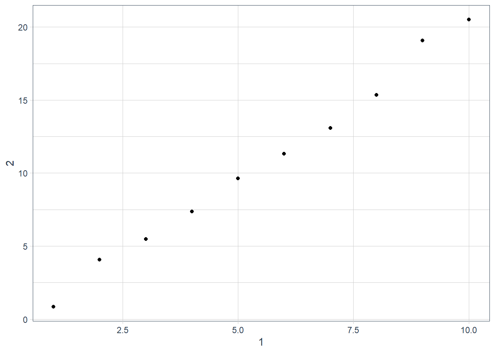
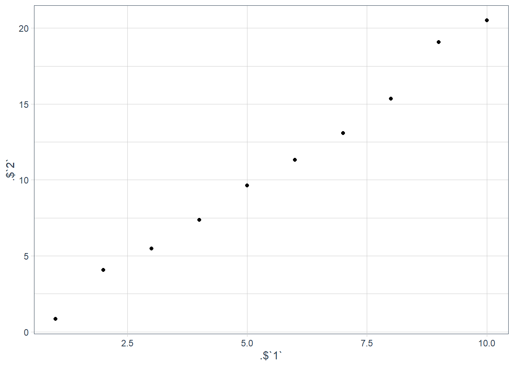
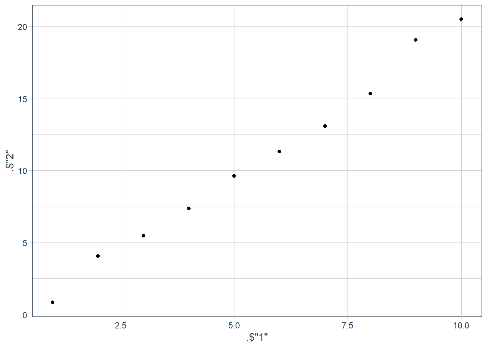
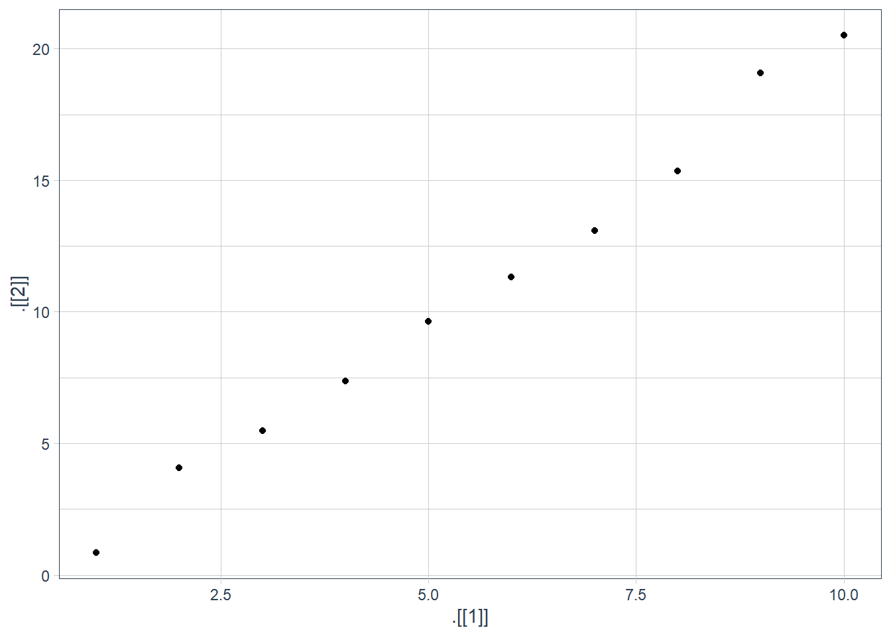

Chapter 7 - Tibbles
Vebash Naidoo
17/10/2020
Last updated: 2020-10-18
Checks: 7 0
Knit directory: r4ds_book/
This reproducible R Markdown analysis was created with workflowr (version 1.6.2). The Checks tab describes the reproducibility checks that were applied when the results were created. The Past versions tab lists the development history.
Great! Since the R Markdown file has been committed to the Git repository, you know the exact version of the code that produced these results.
Great job! The global environment was empty. Objects defined in the global environment can affect the analysis in your R Markdown file in unknown ways. For reproduciblity it’s best to always run the code in an empty environment.
The command set.seed(20200814) was run prior to running the code in the R Markdown file. Setting a seed ensures that any results that rely on randomness, e.g. subsampling or permutations, are reproducible.
Great job! Recording the operating system, R version, and package versions is critical for reproducibility.
Nice! There were no cached chunks for this analysis, so you can be confident that you successfully produced the results during this run.
Great job! Using relative paths to the files within your workflowr project makes it easier to run your code on other machines.
Great! You are using Git for version control. Tracking code development and connecting the code version to the results is critical for reproducibility.
The results in this page were generated with repository version f81b11a. See the Past versions tab to see a history of the changes made to the R Markdown and HTML files.
Note that you need to be careful to ensure that all relevant files for the analysis have been committed to Git prior to generating the results (you can use wflow_publish or wflow_git_commit). workflowr only checks the R Markdown file, but you know if there are other scripts or data files that it depends on. Below is the status of the Git repository when the results were generated:
Ignored files:
Ignored: .Rproj.user/
Untracked files:
Untracked: VideoDecodeStats/
Untracked: analysis/images/
Untracked: code_snipp.txt
Note that any generated files, e.g. HTML, png, CSS, etc., are not included in this status report because it is ok for generated content to have uncommitted changes.
These are the previous versions of the repository in which changes were made to the R Markdown (analysis/ch7_tibbles.Rmd) and HTML (docs/ch7_tibbles.html) files. If you’ve configured a remote Git repository (see ?wflow_git_remote), click on the hyperlinks in the table below to view the files as they were in that past version.
| File | Version | Author | Date | Message |
|---|---|---|---|---|
| html | 1a3bebe | sciencificity | 2020-10-18 | Build site. |
| Rmd | 03b054a | sciencificity | 2020-10-18 | added Chapter 7 |
options(scipen=10000)
library(tidyverse)
library(flair)
library(nycflights13)
library(palmerpenguins)
library(gt)
library(skimr)
library(emo)
library(tidyquant)
library(lubridate)
library(magrittr)
theme_set(theme_tq())Class
class(iris) # initially R's data.frame
[1] "data.frame"
(iris2 <- as_tibble(iris))
# A tibble: 150 x 5
Sepal.Length Sepal.Width Petal.Length Petal.Width Species
<dbl> <dbl> <dbl> <dbl> <fct>
1 5.1 3.5 1.4 0.2 setosa
2 4.9 3 1.4 0.2 setosa
3 4.7 3.2 1.3 0.2 setosa
4 4.6 3.1 1.5 0.2 setosa
5 5 3.6 1.4 0.2 setosa
6 5.4 3.9 1.7 0.4 setosa
7 4.6 3.4 1.4 0.3 setosa
8 5 3.4 1.5 0.2 setosa
9 4.4 2.9 1.4 0.2 setosa
10 4.9 3.1 1.5 0.1 setosa
# ... with 140 more rows
class(iris2) # "tbl_df" "tbl" "data.frame"
[1] "tbl_df" "tbl" "data.frame"
The tbl and tbl_df tell us this has been converted to a tibble.
Creation
To create a tibble we use the tibble() function.
tibble(
x = 1:5,
y = 1, # recycled
z = x ^ 2 + y
)
# A tibble: 5 x 3
x y z
<int> <dbl> <dbl>
1 1 1 2
2 2 1 5
3 3 1 10
4 4 1 17
5 5 1 26
A tibble is just a different form of a data.frame. The column names do not need to comply with R’s variable naming convention.
For example the variable name test subject is unacceptable in R as a var name, however it is totally fine if it is a column name in a tibble. The variable must be referred to by using the backticks `` or "".
# Ch7 in R4DS - tibbles
# Can use either backticks `` or quotation marks "" to surround non-syntactic names
(tb = tibble(
":)" = "smile",
" " = "space",
`2000` = "number",
`some non syntactic name` = "some value",
meaning = 42 # no back ticks or "" since this is syntactically allowed
))
# A tibble: 1 x 5
`:)` ` ` `2000` `some non syntactic name` meaning
<chr> <chr> <chr> <chr> <dbl>
1 smile space number some value 42
# Can use `` or "" to access the variable with the non-syntactic name
tb$`:)`
[1] "smile"
tb$":)"
[1] "smile"
# Can use `` or "" to manipulate the non-syntactic named var
tb %>%
mutate(":)" = "smiley")
# A tibble: 1 x 5
`:)` ` ` `2000` `some non syntactic name` meaning
<chr> <chr> <chr> <chr> <dbl>
1 smiley space number some value 42
tb %>%
mutate(`:)` = "smiley too")
# A tibble: 1 x 5
`:)` ` ` `2000` `some non syntactic name` meaning
<chr> <chr> <chr> <chr> <dbl>
1 smiley too space number some value 42
The variable :) in tb contains the value: smile. The variable some non syntactic name in tb contains the value: some value.
Another way is to create a tibble is to use the tribble() function with ~ used for each column name. I often use the datapasta 📦 to paste a tribble from something I have copied onto the clipboard.

A tribble is transposed tibble. It makes it easy to lay out small amounts of data in an easy to read format.
tribble(
~x, ~y, ~z,
#--/--/----
"a", 2, 3.6,
"b", 1, 8.5
)
# A tibble: 2 x 3
x y z
<chr> <dbl> <dbl>
1 a 2 3.6
2 b 1 8.5
tibble::tribble(
~Flavour, ~Total.2009, ~Total.2011, ~East, ~Midwest, ~South, ~West, ~Rep, ~Dem, ~Ind,
"Chocolate", 27L, 28L, 31L, 32L, 28L, 21L, 32L, 23L, 30L,
"Vanilla", 22L, 26L, 27L, 22L, 30L, 22L, 28L, 26L, 22L,
"Cookie Dough/ Cookies and cream", 22L, 22L, 26L, 22L, 21L, 19L, 24L, 18L, 24L,
"Butter Pecan/ Swiss Almond", 20L, 19L, 12L, 24L, 21L, 15L, 15L, 22L, 19L,
"Mint Chocolate Chip", 17L, 15L, 15L, 15L, 15L, 15L, 16L, 12L, 16L,
"Strawberry", 13L, 12L, 8L, 10L, 15L, 12L, 10L, 13L, 12L,
"Rocky Road", 14L, 11L, 8L, 11L, 8L, 19L, 14L, 11L, 9L,
"Coffee", 9L, 9L, 10L, 7L, 6L, 14L, 7L, 11L, 8L,
"Peanut Butter", 8L, 8L, 10L, 9L, 7L, 8L, 12L, 5L, 8L,
"Cherry Vanilla", 9L, 7L, 10L, 6L, 7L, 7L, 6L, 10L, 8L,
"Pistachio", 8L, 7L, 7L, 6L, 6L, 8L, 5L, 9L, 6L,
"Black Raspberry", 6L, 6L, 10L, 6L, 3L, 6L, 7L, 5L, 6L,
"Peach", 4L, 5L, 6L, 4L, 7L, 3L, 5L, 7L, 4L,
"Seasonal, such as pumpkin or eggnog", 2L, 4L, 4L, 4L, 5L, 4L, 5L, 3L, 5L,
"Other", 9L, 13L, 13L, 12L, 13L, 15L, 9L, 16L, 13L,
"Do not eat ice cream", 3L, 3L, 1L, 3L, 2L, 5L, 2L, 3L, 3L
)
# A tibble: 16 x 10
Flavour Total.2009 Total.2011 East Midwest South West Rep Dem Ind
<chr> <int> <int> <int> <int> <int> <int> <int> <int> <int>
1 Chocolate 27 28 31 32 28 21 32 23 30
2 Vanilla 22 26 27 22 30 22 28 26 22
3 Cookie Dou~ 22 22 26 22 21 19 24 18 24
4 Butter Pec~ 20 19 12 24 21 15 15 22 19
5 Mint Choco~ 17 15 15 15 15 15 16 12 16
6 Strawberry 13 12 8 10 15 12 10 13 12
7 Rocky Road 14 11 8 11 8 19 14 11 9
8 Coffee 9 9 10 7 6 14 7 11 8
9 Peanut But~ 8 8 10 9 7 8 12 5 8
10 Cherry Van~ 9 7 10 6 7 7 6 10 8
11 Pistachio 8 7 7 6 6 8 5 9 6
12 Black Rasp~ 6 6 10 6 3 6 7 5 6
13 Peach 4 5 6 4 7 3 5 7 4
14 Seasonal, ~ 2 4 4 4 5 4 5 3 5
15 Other 9 13 13 12 13 15 9 16 13
16 Do not eat~ 3 3 1 3 2 5 2 3 3
Printing
tibble(
a = lubridate::now() + runif(1e3) * 86400,
b = lubridate::today() + runif(1e3) * 30,
c = 1:1e3,
d = runif(1e3),
e = sample(letters, 1e3, replace = TRUE)
) %>%
print(n = 15, width = Inf) # show 15 rows instead of 10, and all cols# A tibble: 1,000 x 5
a b c d e
<dttm> <date> <int> <dbl> <chr>
1 2020-10-19 06:10:11 2020-11-14 1 0.445 s
2 2020-10-19 00:44:40 2020-10-20 2 0.637 b
3 2020-10-19 01:48:20 2020-10-28 3 0.621 f
4 2020-10-19 03:54:30 2020-11-14 4 0.925 w
5 2020-10-19 00:43:55 2020-10-18 5 0.678 k
6 2020-10-19 18:18:19 2020-10-22 6 0.643 a
7 2020-10-19 10:23:37 2020-11-13 7 0.169 k
8 2020-10-18 20:13:23 2020-10-21 8 0.681 q
9 2020-10-19 01:08:59 2020-10-27 9 0.767 u
10 2020-10-18 18:59:17 2020-10-25 10 0.645 h
11 2020-10-19 14:35:41 2020-11-06 11 0.954 g
12 2020-10-19 17:38:38 2020-11-11 12 0.0452 t
13 2020-10-18 20:34:14 2020-11-14 13 0.679 l
14 2020-10-19 13:29:21 2020-10-23 14 0.543 e
15 2020-10-19 17:03:12 2020-10-20 15 0.731 a
# ... with 985 more rowsSubsetting
(df <- tibble(
x = runif(5),
y = rnorm(5)
))
# A tibble: 5 x 2
x y
<dbl> <dbl>
1 0.275 -0.365
2 0.853 1.20
3 0.291 -0.0950
4 0.711 -1.15
5 0.116 -0.727
# extract by name
df$x
[1] 0.2751769 0.8533060 0.2914412 0.7105093 0.1155235
# OR
df[["x"]]
[1] 0.2751769 0.8533060 0.2914412 0.7105093 0.1155235
# extract by position
df[[1]]
[1] 0.2751769 0.8533060 0.2914412 0.7105093 0.1155235
# When using a pipe use the placeholder . to access
df %>%
.$x
[1] 0.2751769 0.8533060 0.2914412 0.7105093 0.1155235
df %>%
.[["x"]]
[1] 0.2751769 0.8533060 0.2914412 0.7105093 0.1155235
Summary
Tibbles:
Print well, so as to not overwhelm your console (by printing 10 rows and only as many columns as will fit in your console window).
- Want to print all columns? Use
print(n = xx, width = Inf)
- Want to print all columns? Use
Subset more strictly that data.frame
- Never partial matching
- Warns if column you’re trying to access does not exist.
Older functions may not work with tibbles. To convert a tibble to a data.fram use
as.data.frame(tibble_name)
Exercises
How can you tell if an object is a tibble? (Hint: try printing
mtcars, which is a regular data frame).mtcarsmpg cyl disp hp drat wt qsec vs am gear carb Mazda RX4 21.0 6 160.0 110 3.90 2.620 16.46 0 1 4 4 Mazda RX4 Wag 21.0 6 160.0 110 3.90 2.875 17.02 0 1 4 4 Datsun 710 22.8 4 108.0 93 3.85 2.320 18.61 1 1 4 1 Hornet 4 Drive 21.4 6 258.0 110 3.08 3.215 19.44 1 0 3 1 Hornet Sportabout 18.7 8 360.0 175 3.15 3.440 17.02 0 0 3 2 Valiant 18.1 6 225.0 105 2.76 3.460 20.22 1 0 3 1 Duster 360 14.3 8 360.0 245 3.21 3.570 15.84 0 0 3 4 Merc 240D 24.4 4 146.7 62 3.69 3.190 20.00 1 0 4 2 Merc 230 22.8 4 140.8 95 3.92 3.150 22.90 1 0 4 2 Merc 280 19.2 6 167.6 123 3.92 3.440 18.30 1 0 4 4 Merc 280C 17.8 6 167.6 123 3.92 3.440 18.90 1 0 4 4 Merc 450SE 16.4 8 275.8 180 3.07 4.070 17.40 0 0 3 3 Merc 450SL 17.3 8 275.8 180 3.07 3.730 17.60 0 0 3 3 Merc 450SLC 15.2 8 275.8 180 3.07 3.780 18.00 0 0 3 3 Cadillac Fleetwood 10.4 8 472.0 205 2.93 5.250 17.98 0 0 3 4 Lincoln Continental 10.4 8 460.0 215 3.00 5.424 17.82 0 0 3 4 Chrysler Imperial 14.7 8 440.0 230 3.23 5.345 17.42 0 0 3 4 Fiat 128 32.4 4 78.7 66 4.08 2.200 19.47 1 1 4 1 Honda Civic 30.4 4 75.7 52 4.93 1.615 18.52 1 1 4 2 Toyota Corolla 33.9 4 71.1 65 4.22 1.835 19.90 1 1 4 1 Toyota Corona 21.5 4 120.1 97 3.70 2.465 20.01 1 0 3 1 Dodge Challenger 15.5 8 318.0 150 2.76 3.520 16.87 0 0 3 2 AMC Javelin 15.2 8 304.0 150 3.15 3.435 17.30 0 0 3 2 Camaro Z28 13.3 8 350.0 245 3.73 3.840 15.41 0 0 3 4 Pontiac Firebird 19.2 8 400.0 175 3.08 3.845 17.05 0 0 3 2 Fiat X1-9 27.3 4 79.0 66 4.08 1.935 18.90 1 1 4 1 Porsche 914-2 26.0 4 120.3 91 4.43 2.140 16.70 0 1 5 2 Lotus Europa 30.4 4 95.1 113 3.77 1.513 16.90 1 1 5 2 Ford Pantera L 15.8 8 351.0 264 4.22 3.170 14.50 0 1 5 4 Ferrari Dino 19.7 6 145.0 175 3.62 2.770 15.50 0 1 5 6 Maserati Bora 15.0 8 301.0 335 3.54 3.570 14.60 0 1 5 8 Volvo 142E 21.4 4 121.0 109 4.11 2.780 18.60 1 1 4 2class(mtcars)[1] "data.frame"Tibbles:
- Print only 10 rows, and as many columns as will fit on the console / screen
- If you find the calss of a tibble among the output should be
tbl_dfandtbl.
penguins# A tibble: 344 x 8 species island bill_length_mm bill_depth_mm flipper_length_~ body_mass_g <fct> <fct> <dbl> <dbl> <int> <int> 1 Adelie Torge~ 39.1 18.7 181 3750 2 Adelie Torge~ 39.5 17.4 186 3800 3 Adelie Torge~ 40.3 18 195 3250 4 Adelie Torge~ NA NA NA NA 5 Adelie Torge~ 36.7 19.3 193 3450 6 Adelie Torge~ 39.3 20.6 190 3650 7 Adelie Torge~ 38.9 17.8 181 3625 8 Adelie Torge~ 39.2 19.6 195 4675 9 Adelie Torge~ 34.1 18.1 193 3475 10 Adelie Torge~ 42 20.2 190 4250 # ... with 334 more rows, and 2 more variables: sex <fct>, year <int>class(penguins)[1] "tbl_df" "tbl" "data.frame"Compare and contrast the following operations on a
data.frameand equivalent tibble. What is different? Why might the default data frame behaviours cause you frustration?On a data.frame
df <- data.frame(abc = 1, xyz = "a") df$x[1] a Levels: adf[, "xyz"][1] a Levels: adf[, c("abc", "xyz")]abc xyz 1 1 aOn a tibble
df <- tibble(abc = 1, xyz = "a") df$xWarning: Unknown or uninitialised column: `x`.NULLdf[, "xyz"]# A tibble: 1 x 1 xyz <chr> 1 adf[, c("abc", "xyz")]# A tibble: 1 x 2 abc xyz <dbl> <chr> 1 1 a- The data frame does not have an x variable, yet with a data.frame it prints a value for x since it does partial matching.
- The data frame has a character attribute for the column
xyzyet the data.frame converts it to a factor, and outputs the factors levels. 😨 - The information about the type of data contained in every variable when you print a tibble is useful 💯.
If you have the name of a variable stored in an object, e.g.
var <- "mpg", how can you extract the reference variable from a tibble?var <- "mpg" (test_tbl <- as_tibble(mtcars))# A tibble: 32 x 11 mpg cyl disp hp drat wt qsec vs am gear carb <dbl> <dbl> <dbl> <dbl> <dbl> <dbl> <dbl> <dbl> <dbl> <dbl> <dbl> 1 21 6 160 110 3.9 2.62 16.5 0 1 4 4 2 21 6 160 110 3.9 2.88 17.0 0 1 4 4 3 22.8 4 108 93 3.85 2.32 18.6 1 1 4 1 4 21.4 6 258 110 3.08 3.22 19.4 1 0 3 1 5 18.7 8 360 175 3.15 3.44 17.0 0 0 3 2 6 18.1 6 225 105 2.76 3.46 20.2 1 0 3 1 7 14.3 8 360 245 3.21 3.57 15.8 0 0 3 4 8 24.4 4 147. 62 3.69 3.19 20 1 0 4 2 9 22.8 4 141. 95 3.92 3.15 22.9 1 0 4 2 10 19.2 6 168. 123 3.92 3.44 18.3 1 0 4 4 # ... with 22 more rows# does not work: # test_tbl$var # NULL # Warning message: # Unknown or uninitialised column: `var`. # does not work # test_tbl[["var"]] # NULL # Need to use: test_tbl[[var]][1] 21.0 21.0 22.8 21.4 18.7 18.1 14.3 24.4 22.8 19.2 17.8 16.4 17.3 15.2 10.4 [16] 10.4 14.7 32.4 30.4 33.9 21.5 15.5 15.2 13.3 19.2 27.3 26.0 30.4 15.8 19.7 [31] 15.0 21.4Practice referring to non-syntactic names in the following data frame by:
Extracting the variable called
1.Plotting a scatterplot of
1vs2.Creating a new column called
3which is2divided by1.Renaming the columns to
one,twoandthree.
annoying <- tibble( `1` = 1:10, `2` = `1` * 2 + rnorm(length(`1`)) )# Extracting the variable called `1`. annoying$`1`[1] 1 2 3 4 5 6 7 8 9 10annoying$"1"[1] 1 2 3 4 5 6 7 8 9 10annoying[["1"]][1] 1 2 3 4 5 6 7 8 9 10annoying[[1]] # by position[1] 1 2 3 4 5 6 7 8 9 10# does not work # annoying[[`1`]] # Error in tbl_subset2(x, j = i, j_arg = substitute(i)) : # object '1' not found# Plotting a scatterplot of `1` vs `2`. annoying %>% ggplot(aes(x = `1`, y = `2`)) + geom_point()
# discouraged ways annoying %>% ggplot(aes(x = .$`1`, y = .$`2`)) + geom_point()Warning: Use of `.$`1`` is discouraged. Use `1` instead.Warning: Use of `.$`2`` is discouraged. Use `2` instead.
annoying %>% ggplot(aes(x = .$"1", y = .$"2")) + geom_point()Warning: Use of `.$"1"` is discouraged. Use `1` instead.Warning: Use of `.$"2"` is discouraged. Use `2` instead.
annoying %>% ggplot(aes(x = .[[1]], y = .[[2]])) + geom_point()Warning: Use of `.[[1]]` is discouraged. Use `.data[[1]]` instead.Warning: Use of `.[[2]]` is discouraged. Use `.data[[2]]` instead.
# Creating a new column called `3` which is # `2` divided by `1`. (annoying <- annoying %>% mutate(`3` = `2`/`1`))# A tibble: 10 x 3 `1` `2` `3` <int> <dbl> <dbl> 1 1 0.835 0.835 2 2 4.06 2.03 3 3 5.48 1.83 4 4 7.36 1.84 5 5 9.64 1.93 6 6 11.3 1.89 7 7 13.1 1.87 8 8 15.4 1.92 9 9 19.1 2.12 10 10 20.5 2.05# Renaming the columns to `one`, `two` and `three`. (annoying <- annoying %>% rename("one" = "1", "two" = "2", "three" = "3"))# A tibble: 10 x 3 one two three <int> <dbl> <dbl> 1 1 0.835 0.835 2 2 4.06 2.03 3 3 5.48 1.83 4 4 7.36 1.84 5 5 9.64 1.93 6 6 11.3 1.89 7 7 13.1 1.87 8 8 15.4 1.92 9 9 19.1 2.12 10 10 20.5 2.05What does
tibble::enframe()do? When might you use it?It converts named vectors into tibbles.
# examples from the ?enframe help page enframe(1:3)# A tibble: 3 x 2 name value <int> <int> 1 1 1 2 2 2 3 3 3enframe(c(a = 5, b = 7))# A tibble: 2 x 2 name value <chr> <dbl> 1 a 5 2 b 7enframe(list(one = 1, two = 2:3, three = 4:6))# A tibble: 3 x 2 name value <chr> <list> 1 one <dbl [1]> 2 two <int [2]> 3 three <int [3]>Note: Selecting examples on a help page in RStudio and pressing Ctrl + Enter sends the example to your console and runs it!

What option controls how many additional column names are printed at the footer of a tibble?
n_extra: Number of extra columns to print abbreviated information for, if the width is too small for the entire tibble. If NULL, the default, will print information about at most tibble.max_extra_cols extra columns.
sessionInfo()R version 3.6.3 (2020-02-29)
Platform: x86_64-w64-mingw32/x64 (64-bit)
Running under: Windows 10 x64 (build 18363)
Matrix products: default
locale:
[1] LC_COLLATE=English_South Africa.1252 LC_CTYPE=English_South Africa.1252
[3] LC_MONETARY=English_South Africa.1252 LC_NUMERIC=C
[5] LC_TIME=English_South Africa.1252
attached base packages:
[1] stats graphics grDevices utils datasets methods base
other attached packages:
[1] magrittr_1.5 tidyquant_1.0.0
[3] quantmod_0.4.17 TTR_0.23-6
[5] PerformanceAnalytics_2.0.4 xts_0.12-0
[7] zoo_1.8-7 lubridate_1.7.8
[9] emo_0.0.0.9000 skimr_2.1.1
[11] gt_0.2.2 palmerpenguins_0.1.0
[13] nycflights13_1.0.1 flair_0.0.2
[15] forcats_0.5.0 stringr_1.4.0
[17] dplyr_1.0.0 purrr_0.3.4
[19] readr_1.3.1 tidyr_1.1.0
[21] tibble_3.0.3 ggplot2_3.3.0
[23] tidyverse_1.3.0 workflowr_1.6.2
loaded via a namespace (and not attached):
[1] httr_1.4.2 jsonlite_1.7.0 modelr_0.1.6 assertthat_0.2.1
[5] cellranger_1.1.0 yaml_2.2.1 pillar_1.4.6 backports_1.1.6
[9] lattice_0.20-38 glue_1.4.1 quadprog_1.5-8 digest_0.6.25
[13] promises_1.1.0 rvest_0.3.5 colorspace_1.4-1 htmltools_0.5.0
[17] httpuv_1.5.2 pkgconfig_2.0.3 broom_0.5.6 haven_2.2.0
[21] scales_1.1.0 whisker_0.4 later_1.0.0 git2r_0.26.1
[25] farver_2.0.3 generics_0.0.2 ellipsis_0.3.1 withr_2.2.0
[29] repr_1.1.0 cli_2.0.2 crayon_1.3.4 readxl_1.3.1
[33] evaluate_0.14 fs_1.4.1 fansi_0.4.1 nlme_3.1-144
[37] xml2_1.3.2 tools_3.6.3 hms_0.5.3 lifecycle_0.2.0
[41] munsell_0.5.0 reprex_0.3.0 compiler_3.6.3 rlang_0.4.7
[45] grid_3.6.3 rstudioapi_0.11 labeling_0.3 base64enc_0.1-3
[49] rmarkdown_2.4 gtable_0.3.0 DBI_1.1.0 curl_4.3
[53] R6_2.4.1 knitr_1.28 utf8_1.1.4 rprojroot_1.3-2
[57] Quandl_2.10.0 stringi_1.4.6 Rcpp_1.0.4.6 vctrs_0.3.2
[61] dbplyr_1.4.3 tidyselect_1.1.0 xfun_0.13